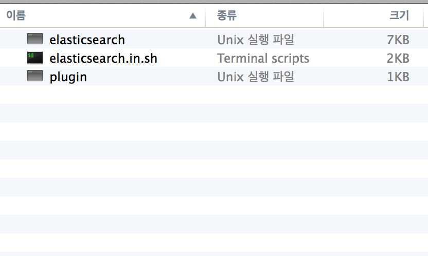
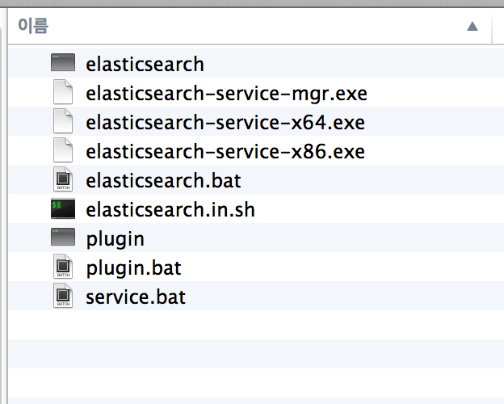
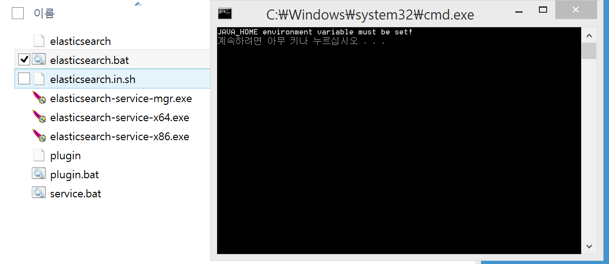
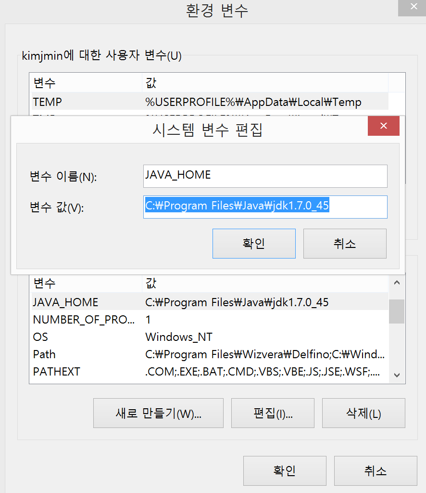
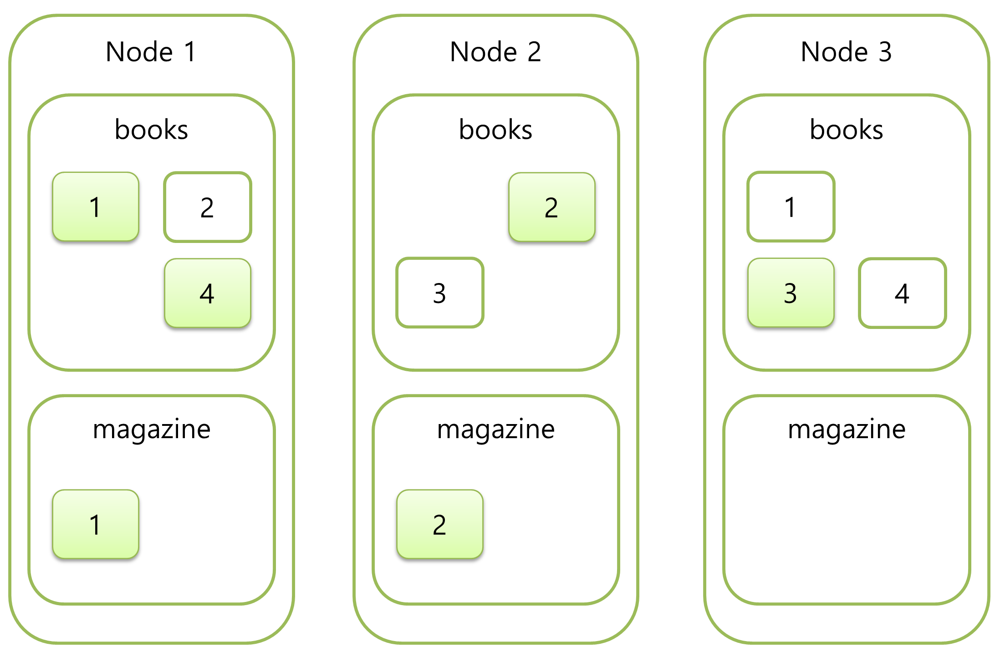

elasticsearch.tar.gz 과 elasticsearch.zip 파일의
bin/ 디렉토리 내용
 
 
Java Option : -X -D
$ bin/elasticsearch -Xmx2g -Xms2g -Des.index.store.type=memory --node.name=my-node
ps -ef | grep elasticsearch 명령으로 확인
-Xms256m -Xmx1g
if [ "x$ES_MIN_MEM" = "x" ]; then
ES_MIN_MEM=256m
fi
if [ "x$ES_MAX_MEM" = "x" ]; then
ES_MAX_MEM=1g
fi
오버헤드 방지를 위해 같은 사이즈로 하는 것을 추천.
모든 옵션은 -Des.* 또는 --* 으로 실행시 설정 가능
$ bin/elasticsearch -Des.node.name=node1YAML 또는 JSON 형식으로 환경설정 가능.
cluster health check : localhost:9200/_cluster/health?pretty=true 노드 정보 확인 : curl localhost:9200/_nodes/process?pretty=truecluster.name :
같은 클러스터명을 가진 노드끼리 바인딩 됨.
cluster.name: kjm
cluster:
name: kjm
cluster health check : localhost:9200/_cluster/health?pretty=true
Shards & Replicas
이 옵션에 명시한 플러그인이 설치되어 있지 않으면 노드가 실행되지 않음.
plugin.mandatory: mapper-attachments,lang-groovyJVM 에 의한 메모리 스왑이 일어나지 않도록 메모리 락 설정.
cluster.name: 과 함께 초기에 반드시 설정 해 주는 것을 추천함.
bootstrap.mlockall: true클러스터의 메타정보, 인덱스 설정, 매핑정보 등을 저장하는 구성
다른 네트워크의 노드와 바인딩을 위해 필요한 설정.
elasticsearch-cloud-aws 플러그인 디스크버리 설정.
cloud:
aws:
access_key: AKVAIQBF2RECL7FJWGJQ
secret_key: vExyMThREXeRMm/b/LRzEB8jWwvzQeXgjqMX+6br
discovery:
type: ec2
클러스터의 메타정보, 인덱스 설정, 매핑정보 등을 저장하는 구성